Code
library(sf)
library(ggplot2)
library(dplyr)
library(viridis)
library(ggspatial)
library(spdep)
library(scales)
Dans ce chapitre, nous appliquons les concepts vus jusqu’ici à un cas concret : les ventes immobilières à Londres. Nous allons charger des données, les spatialiser, les joindre, les agréger, et produire des cartes publiables.
Les opérations que nous couvrons — jointure spatiale, zone tampon, intersection, calcul de distance — constituent le cœur du géotraitement (geoprocessing).
library(sf)
library(ggplot2)
library(dplyr)
library(viridis)
library(ggspatial)
library(spdep)
library(scales)Chargez le shapefile des districts londoniens et le fichier CSV des ventes immobilières.
Pour lire un shapefile dans R avec sf, la fonction est read_sf(). Pour un CSV, c’est read.csv().
# À compléter
london <- ___(dsn = "data/London/Polygons/districts.shp")
ventes <- read.csv("data/London/Tables/housesales.csv")london <- read_sf(dsn = "data/London/Polygons/districts.shp")
ventes <- read.csv("data/London/Tables/housesales.csv")Le fichier ventes est un data frame ordinaire avec des colonnes de coordonnées. Convertissez-le en objet sf avec st_as_sf(). Les coordonnées se trouvent dans les colonnes 17 et 18.
st_as_sf(data, coords = c(col_lon, col_lat)) — passez les numéros de colonnes ou les noms.
ventes <- st_as_sf(ventes, coords = c(___, ___))ventes <- st_as_sf(ventes, coords = c(17, 18))Les coordonnées de Londres sont en British National Grid (EPSG:27700). Définissez ce SCR sur l’objet ventes.
Souvenez-vous de la distinction st_set_crs() vs st_transform() — ici nous déclarons le SCR, nous ne reprojetons pas.
ventes <- st_set_crs(ventes, ___)ventes <- st_set_crs(ventes, 27700)Maintenant que les données sont chargées, explorons-les visuellement. Ce bloc est entièrement fourni — lisez le code attentivement, chaque ligne est commentée.
ggplot2wards <- read_sf("data/London/Polygons/wards.shp")
wards$level4p <- wards$LEVEL4_5 / wards$POP16_74
wards$level4pp <- wards$level4p * 100
# Carte minimale
ggplot(wards) +
geom_sf(fill = "grey90", color = "white", linewidth = 0.2) +
theme_void(base_size = 12) +
labs(title = "Wards de Londres", caption = "Source : données Londres | Cours R-Carto") +
theme(plot.title = element_text(face = "bold", hjust = 0.5))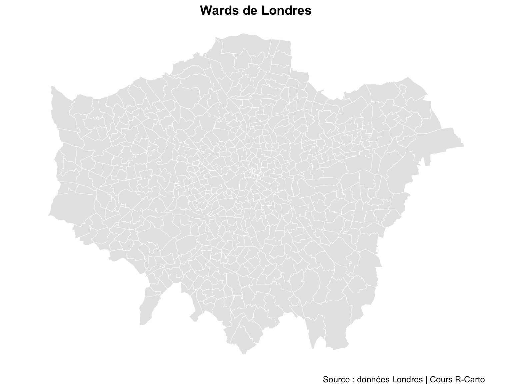
ggplot(wards) +
geom_sf(aes(fill = level4p), color = "white", linewidth = 0.15) +
scale_fill_viridis_c(
name = "Niveau 4+",
option = "mako",
labels = label_percent()
) +
labs(
title = "Part de la population avec qualification niveau 4+",
caption = "Source : Recensement 2001 | Cours R-Carto"
) +
theme_void(base_size = 12) +
theme(plot.title = element_text(face = "bold", hjust = 0.5))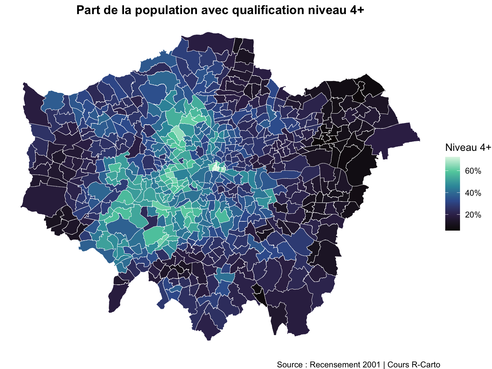
ggplot(wards) +
geom_sf(aes(fill = level4p), color = "white", linewidth = 0.15) +
scale_fill_viridis_c(
name = "Niveau 4+",
option = "mako",
labels = label_percent()
) +
annotation_scale(location = "bl") +
annotation_north_arrow(location = "bl", pad_y = unit(1, "cm"),
style = north_arrow_fancy_orienteering()) +
labs(
title = "Qualification niveau 4+ — Wards de Londres",
caption = "Source : Recensement 2001 | Cours R-Carto"
) +
theme_void(base_size = 12) +
theme(plot.title = element_text(face = "bold", hjust = 0.5))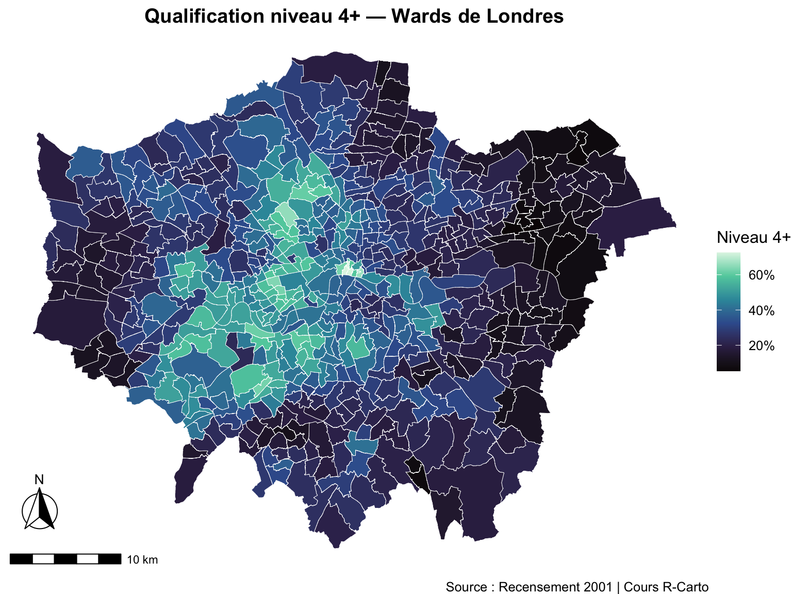
Créez une carte simple des districts londoniens avec ggplot2.
map1 <- ggplot() +
___(data = london, ___) +
theme_void()
map1map1 <- ggplot() +
geom_sf(data = london, fill = "grey95", color = "white", linewidth = 0.4) +
geom_sf_text(data = london, aes(label = DIST_NAME),
fun.geometry = sf::st_centroid, size = 2, color = "grey30") +
theme_void(base_size = 12) +
labs(title = "Districts de Londres",
caption = "Source : données Londres | Cours R-Carto") +
theme(plot.title = element_text(face = "bold", hjust = 0.5))
map1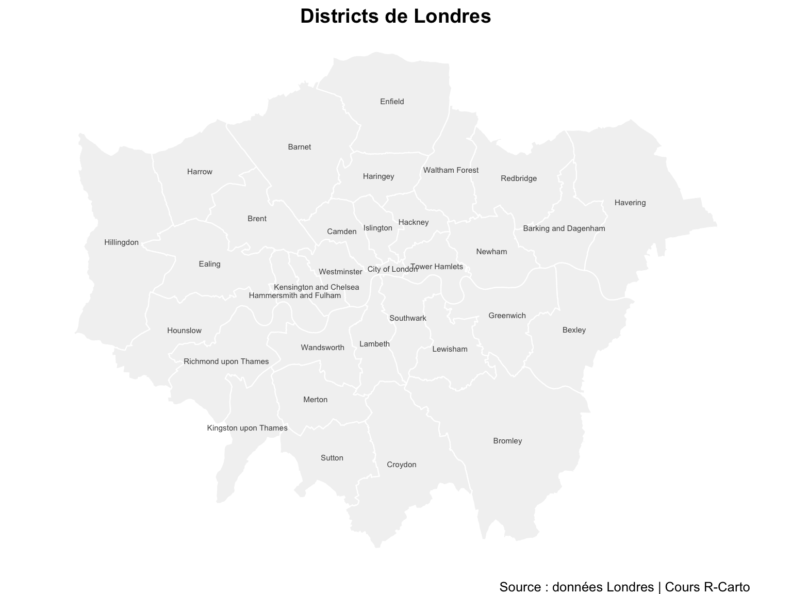
Ajoutez les transactions immobilières (ventes) à la carte map1.
Dans ggplot2, on ajoute une couche avec + et un nouveau geom_sf().
map1 + ___(data = ventes, ___)map1 +
geom_sf(data = ventes, color = "#d7191c", size = 0.3, alpha = 0.4)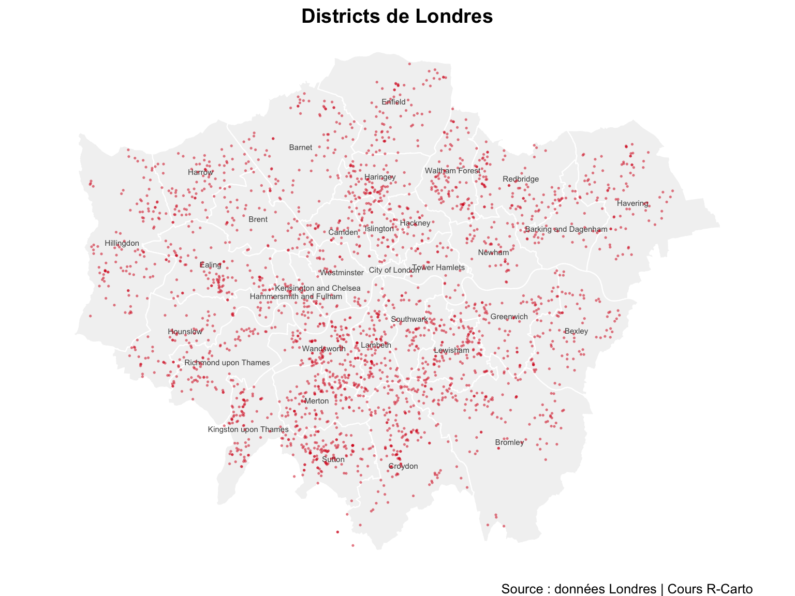
Une jointure spatiale (st_join()) associe à chaque point le polygone dans lequel il tombe — ici, chaque vente immobilière hérite des attributs du district qui la contient.
# Rappel des fonctions spatiales disponibles :
# st_join(polygons, points) → jointure spatiale
# st_intersects(x, y) → renvoie les indices des objets qui se croisent
# st_intersection(x, y) → renvoie les géométries découpées à l'intersectionCréez un objet ventes_districts qui joint les polygones des districts avec les points de vente.
st_join(polygons, points) — l’ordre compte : le premier argument donne la structure géométrique du résultat.
ventes_districts <- st_join(___, ___)
head(ventes_districts)ventes_districts <- st_join(london, ventes)
head(ventes_districts)Simple feature collection with 6 features and 33 fields
Geometry type: POLYGON
Dimension: XY
Bounding box: xmin: 530966.7 ymin: 180404.3 xmax: 551943.8 ymax: 191139
Projected CRS: OSGB36 / British National Grid
# A tibble: 6 × 34
DIST_CODE DIST_NAME geometry propid price lnprice advance
<chr> <chr> <POLYGON [m]> <int> <int> <int> <int>
1 00AA City of Lon… ((531028.5 181611.2, 531… NA NA NA NA
2 00AB Barking and… ((550817 184196, 550814 … 2145 92500 11 77500
3 00AB Barking and… ((550817 184196, 550814 … 2155 105000 12 90000
4 00AB Barking and… ((550817 184196, 550814 … 2164 64995 11 61740
5 00AB Barking and… ((550817 184196, 550814 … 2165 49995 11 37496
6 00AB Barking and… ((550817 184196, 550814 … 2167 136000 12 122400
# ℹ 27 more variables: age <int>, bathroom <int>, bedroom <int>, buyage <chr>,
# centheat <int>, chelec <int>, chepart <int>, chgas <int>, chgpart <int>,
# chnone <int>, floorm2 <int>, ftbuyer <int>, laarea <int>, labad <int>,
# lagood <int>, lea <int>, pdetach <int>, pflat <int>, psemi <int>,
# pterrace <int>, popdens <int>, prkdouble <int>, prknone <int>,
# prksingle <int>, prkspace <int>, tenfree <int>, tenlease <int>À partir de ventes_districts, calculez pour chaque district : le nombre de ventes et le prix moyen.
Utilisez group_by() + summarise() du tidyverse. Le prix est dans la colonne price.
ventes_districts_agg <- ventes_districts |>
group_by(___, ___) |>
summarise(
count_sales = n(),
mean_price = mean(___, na.rm = TRUE)
)
head(ventes_districts_agg)ventes_districts_agg <- ventes_districts |>
group_by(DIST_CODE, DIST_NAME) |>
summarise(
count_sales = n(),
mean_price = mean(price, na.rm = TRUE)
)
head(ventes_districts_agg)Simple feature collection with 6 features and 4 fields
Geometry type: POLYGON
Dimension: XY
Bounding box: xmin: 515484.9 ymin: 156480.8 xmax: 554503.8 ymax: 198355.2
Projected CRS: OSGB36 / British National Grid
# A tibble: 6 × 5
# Groups: DIST_CODE [6]
DIST_CODE DIST_NAME count_sales mean_price geometry
<chr> <chr> <int> <dbl> <POLYGON [m]>
1 00AA City of London 1 NaN ((531028.5 181611.2, 531…
2 00AB Barking and Dagenh… 38 91802. ((550817 184196, 550814 …
3 00AC Barnet 83 169662. ((526830.3 187535.5, 526…
4 00AD Bexley 82 119276. ((552373.5 174606.9, 552…
5 00AE Brent 49 174498. ((524661.7 184631, 52466…
6 00AF Bromley 124 142468. ((533852.2 170129, 53385…La carte ci-dessous est fonctionnelle mais peu lisible. Améliorez-la en ajoutant : une palette viridis option "magma", des labels en livres sterling (£), et un meilleur thème.
map2 <- ggplot() +
geom_sf(data = ventes_districts_agg, aes(fill = mean_price),
color = "white", linewidth = 0.3) +
labs(x = "", y = "")
map2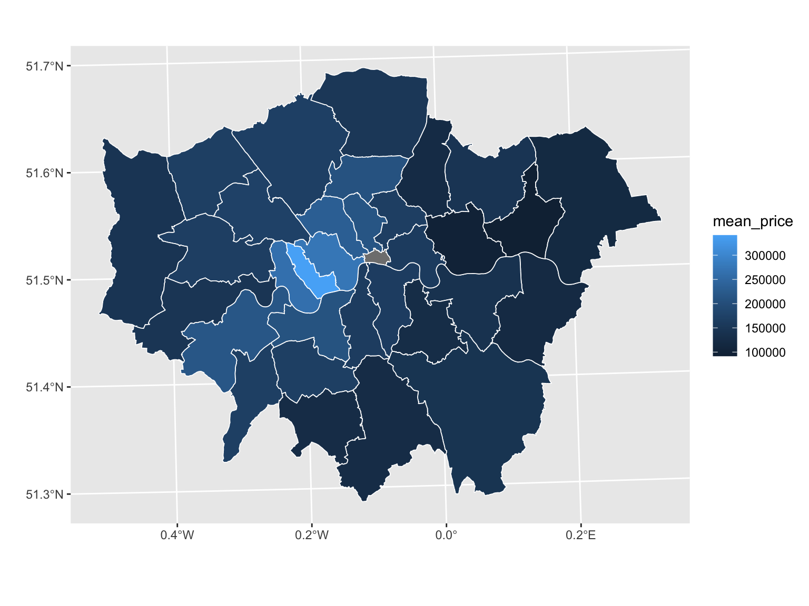
map3 <- ggplot() +
geom_sf(data = ___, aes(fill = ___),
color = "white", linewidth = 0.3) +
scale_fill_viridis(
name = "Prix moyen",
direction = ___,
labels = ___,
option = "___"
) +
labs(
title = "Prix moyen des transactions immobilières — Londres",
caption = "Source : données Londres | Cours R-Carto"
) +
___() # choisissez un thème : ?ggtheme
map3map3 <- ggplot() +
geom_sf(data = ventes_districts_agg, aes(fill = mean_price),
color = "white", linewidth = 0.3) +
scale_fill_viridis(
name = "Prix moyen",
direction = -1,
labels = dollar_format(prefix = "£"),
option = "magma"
) +
labs(
title = "Prix moyen des transactions immobilières — Londres",
caption = "Source : données Londres | Cours R-Carto"
) +
theme_minimal(base_size = 12) +
theme(plot.title = element_text(face = "bold", hjust = 0.5))
map3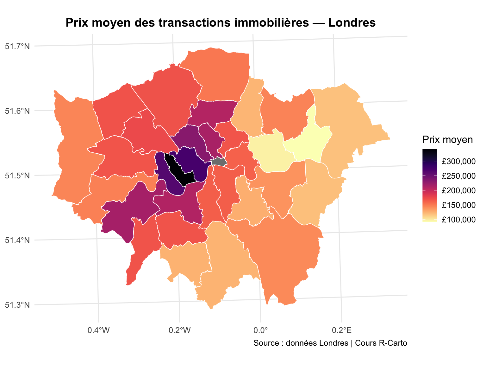
Maintenant que vous maîtrisez le géotraitement sur Londres, créez une carte similaire pour Paris avec les données du cours :
donnees_arrondissement_enrichi.csvleft_join() sur le code arrondissementUne zone tampon est une zone géographique à une distance donnée d’un objet. Ici, nous calculons la population vivant à moins de 500 m d’un échantillon de bâtiments classés londoniens.
batiments_classes <- read_sf("data/London/Points/listed_buildings_london.shp")
# Sélectionner 20 bâtiments au hasard pour l'exemple
set.seed(42)
sample_ids <- sample(batiments_classes$ListEntry, 20)
batiments_classes <- batiments_classes[batiments_classes$ListEntry %in% sample_ids, ]
cat("Nombre de bâtiments sélectionnés :", nrow(batiments_classes))Nombre de bâtiments sélectionnés : 20# Télécharger les zones de sortie du recensement 2011
dir.create("data/London", recursive = TRUE, showWarnings = FALSE)
download.file(
url = "https://data.london.gov.uk/download/statistical-gis-boundary-files-london/9ba8c833-6370-4b11-abdc-314aa020d5e0/statistical-gis-boundaries-london.zip",
destfile = "data/London/statistical-gis-boundaries-london.zip"
)
unzip("data/London/statistical-gis-boundaries-london.zip", exdir = "data/London")oas_census <- read_sf(
"data/London/statistical-gis-boundaries-london/ESRI/OA_2011_London_gen_MHW.shp"
)
oas_census$area_census <- st_area(oas_census)oas_Southwark <- oas_census[oas_census$LAD11NM == "Southwark", ]
ggplot(oas_Southwark) +
geom_sf(fill = "#1a4f7a", color = "white", linewidth = 0.2) +
labs(title = "Zones de recensement — Southwark",
caption = "Source : recensement 2011 | Cours R-Carto") +
theme_void(base_size = 12) +
theme(plot.title = element_text(face = "bold", hjust = 0.5))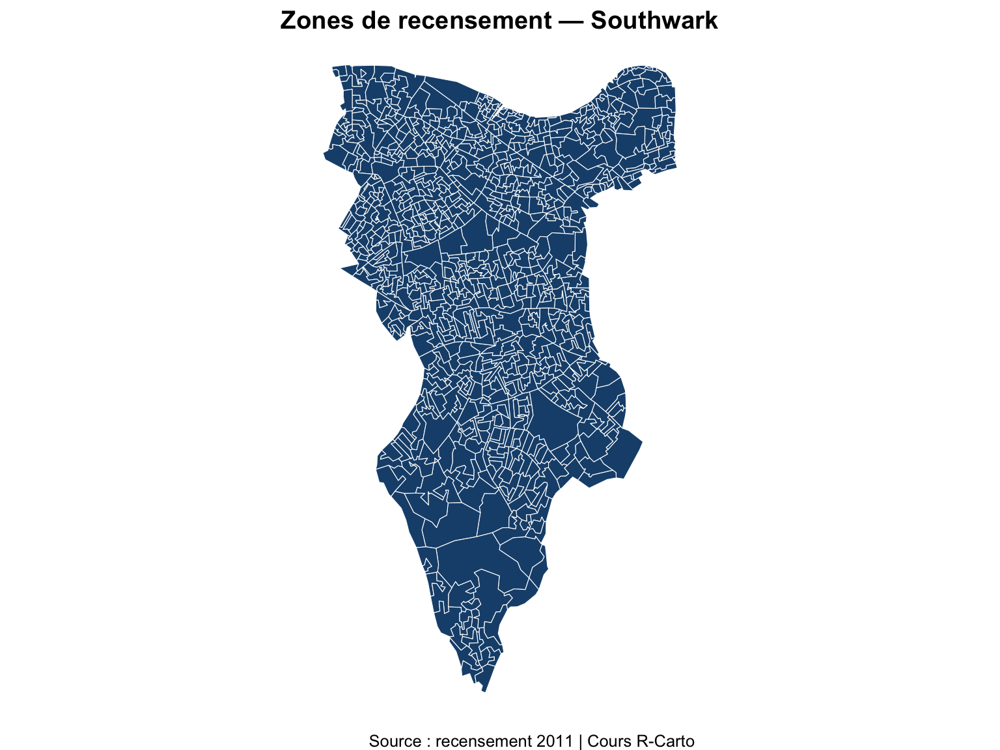
# Harmoniser les SCR
batiments_classes <- st_transform(batiments_classes, st_crs(oas_census))
# Créer les zones tampons de 500 m
buffers500m <- st_buffer(batiments_classes, dist = 500)
buffers500m$area_buffer <- st_area(buffers500m)
ggplot() +
geom_sf(data = buffers500m, fill = "#cce5f0", color = "#1a6ea8",
linewidth = 1.0, alpha = 0.4) +
geom_sf(data = batiments_classes, color = "#d7191c", size = 2.5,
shape = 17) +
labs(
title = "Bâtiments classés et zones tampons (500 m)",
subtitle = "20 bâtiments sélectionnés aléatoirement",
caption = "Source : données Londres | Cours R-Carto"
) +
theme_void(base_size = 12) +
theme(plot.title = element_text(face = "bold", hjust = 0.5),
plot.subtitle = element_text(color = "grey40", hjust = 0.5))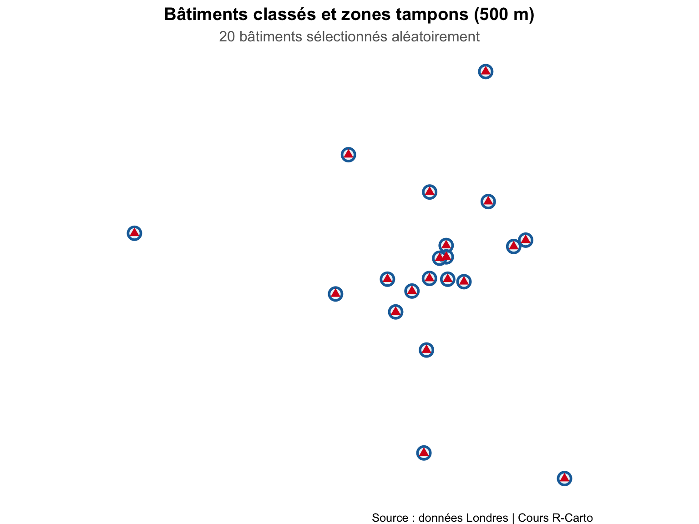
# Corriger les géométries invalides si nécessaire
oas_census <- st_make_valid(oas_census)
# Intersection : quelles zones de recensement tombent dans les tampons ?
buffers_inter <- st_intersection(buffers500m, oas_census)
buffers_inter$area_inter <- st_area(buffers_inter)# Agréger au niveau du bâtiment — population pondérée par la part de surface couverte
buffers_agg <- buffers_inter |>
mutate(
weight = as.numeric(area_inter / area_buffer),
population = as.numeric(USUALRES)
) |>
group_by(ListEntry) |>
summarise_at("population", list(sum = ~sum(. * weight)))
pop_moyenne <- round(mean(buffers_agg$sum))
cat("Population moyenne dans un rayon de 500 m :", pop_moyenne, "habitants\n")Population moyenne dans un rayon de 500 m : 316 habitantsLa population moyenne vivant à moins de 500 m d’un bâtiment classé est 316 habitants.
st_intersection vs st_join vs st_intersects
| Fonction | Ce qu’elle renvoie |
|---|---|
st_join(x, y) |
Table jointe — chaque entité de x avec les attributs de y qui la touchent |
st_intersects(x, y) |
Indices des paires qui se croisent (liste logique) |
st_intersection(x, y) |
Géométries découpées à l’intersection — parties non sécantes supprimées |
Référence : R as GIS for Economists
st_distance() calcule la distance entre deux objets sf. Le résultat est une matrice avec des unités (mètres si la projection est en mètres).
Hackney <- london[london$DIST_NAME == "Hackney", ]
Southwark <- london[london$DIST_NAME == "Southwark", ]
Hackney_centroid <- st_centroid(Hackney)
Southwark_centroid <- st_centroid(Southwark)
dist <- st_distance(Hackney_centroid, Southwark_centroid)
cat("Distance Hackney → Southwark :", round(as.numeric(dist)), "mètres\n")Distance Hackney → Southwark : 8714 mètresggplot() +
geom_sf(data = london, fill = "grey90", color = "grey70", linewidth = 0.3) +
geom_sf(data = Hackney, fill = "#2c7bb6", color = "white", linewidth = 0.5) +
geom_sf(data = Southwark, fill = "#d7191c", color = "white", linewidth = 0.5) +
geom_sf(data = Hackney_centroid, color = "#1a4f7a", size = 4, shape = 19) +
geom_sf(data = Southwark_centroid, color = "#a01010", size = 4, shape = 19) +
geom_sf(data = st_union(Hackney_centroid, Southwark_centroid) |>
st_cast("LINESTRING"),
color = "#333333", linewidth = 1.0, linetype = "dashed") +
annotate("label",
x = -0.03, y = 51.525,
label = paste0(round(as.numeric(dist) / 1000, 1), " km"),
size = 4, fontface = "bold",
fill = "white", label.size = 0.3) +
coord_sf(
xlim = c(st_bbox(london)["xmin"], st_bbox(london)["xmax"]),
ylim = c(st_bbox(london)["ymin"], st_bbox(london)["ymax"]),
expand = TRUE
) +
labs(
title = "Distance entre Hackney et Southwark",
caption = "Source : données Londres | Cours R-Carto"
) +
theme_void(base_size = 12) +
theme(plot.title = element_text(face = "bold", hjust = 0.5))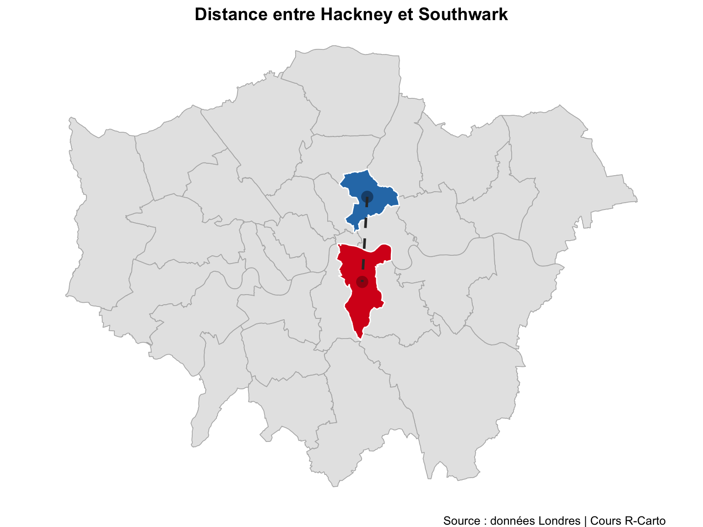
# Distance de Hackney vers Southwark et Croydon
co <- london |> filter(grepl("Southwark|Croydon", DIST_NAME))
st_distance(Hackney_centroid, co)Units: [m]
[,1] [,2]
[1,] 14558.19 5064.61Les poids spatiaux par distance identifient pour chaque point l’ensemble de ses voisins dans un rayon donné. Ici, toutes les propriétés à moins de 2 000 m.
housesales <- read.csv("data/London/Tables/housesales.csv")
housesales_sf <- st_as_sf(housesales, coords = c(17, 18)) |>
st_set_crs(27700)
# Voisins dans un rayon de 0 à 2000 m
W_dist <- dnearneigh(housesales_sf, d1 = 0, d2 = 2000,
row.names = housesales_sf$propid)
# Convertir en liste de poids spatiaux
W_dist_mat <- nb2listw(W_dist, zero.policy = TRUE)
summary(W_dist_mat, zero.policy = TRUE)Characteristics of weights list object:
Neighbour list object:
Number of regions: 2444
Number of nonzero links: 71400
Percentage nonzero weights: 1.195352
Average number of links: 29.2144
1 region with no links:
2
4 disjoint connected subgraphs
Link number distribution:
0 1 2 3 4 5 6 7 8 9 10 11 12 13 14 15 16 17 18 19 20 21 22 23 24 25
1 3 2 16 9 12 19 24 38 43 35 44 55 55 61 52 61 80 60 71 68 84 69 84 77 57
26 27 28 29 30 31 32 33 34 35 36 37 38 39 40 41 42 43 44 45 46 47 48 49 50 51
51 56 59 57 50 47 51 54 44 57 48 27 27 47 38 32 33 36 23 33 36 32 29 17 22 19
52 53 54 55 56 57 58 59 60 61 62 63 64 65 66 67 68 69 70 71 72 73 74
13 11 12 6 15 15 22 6 21 26 16 10 11 3 7 11 9 8 4 4 2 5 2
3 least connected regions:
815 1584 1900 with 1 link
2 most connected regions:
886 984 with 74 links
Weights style: W
Weights constants summary:
n nn S0 S1 S2
W 2443 5968249 2443 235.6446 9848.804# Visualiser le réseau
plot(W_dist_mat,
coords = housesales[, 17:18],
pch = 19,
cex = 0.1,
col = "#2c7bb6",
main = "Voisinage par distance (2 000 m)")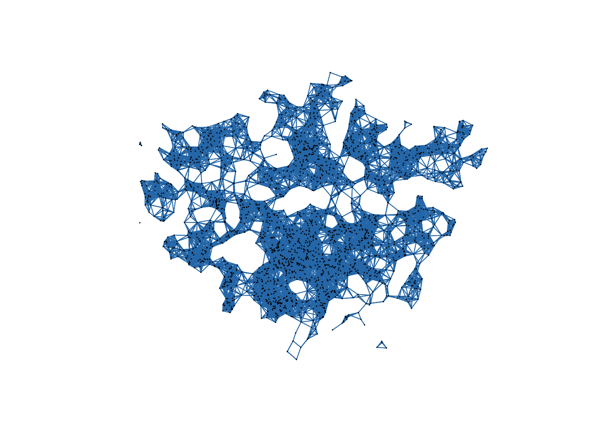
| Opération | Fonction | Usage |
|---|---|---|
| Spatialiser un CSV | st_as_sf(df, coords = c(...)) |
Créer des points depuis lon/lat |
| Définir un SCR | st_set_crs(x, epsg) |
Déclarer le SCR manquant |
| Reprojeter | st_transform(x, epsg) |
Changer de projection |
| Jointure spatiale | st_join(polygons, points) |
Associer points aux polygones |
| Zone tampon | st_buffer(x, dist = ...) |
Zone à distance fixe |
| Intersection | st_intersection(x, y) |
Découper les géométries |
| Calculer une superficie | st_area(x) |
Superficie en m² |
| Calculer une distance | st_distance(x, y) |
Distance entre entités |
| Trouver des voisins | dnearneigh(x, d1, d2) |
Voisinage par distance |
← Précédent : Relief du Liban → Suivant : Interpolation Spatiale
Dr. Elisabetta Pietrostefani — Directrice Adjointe, Geographic Data Science Lab — Université de Liverpool | Co-Directrice, Imago : Data Service for Imagery | Chercheuse Associée, London School of Economics